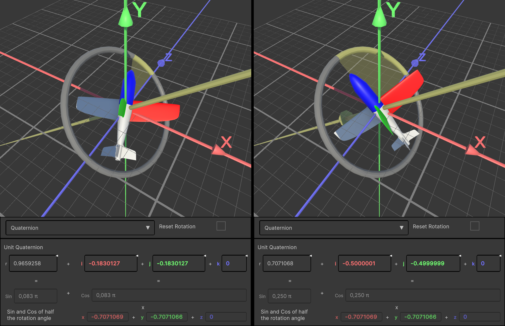

Backend Math Code
Problem: Visualization of Rotation Parameterization, including interactivity, meant that the data & math function need to be as accessible as possible.
Not a Solution: While creating wrappers for the unity-inbuild-classes would have been possible, unity doesn't support all parameterizations directly (e.g. no rotation-vector-class).
Solution: Thus, for the sake of consistency and more control, I decided to write my own math library, meaning I had to research all the mathematical functions & implement them.
Example below: The following scroll-container shows my workflow exemplified based on my research and implementation of the exponential map of quaternions.
Step 1 — Research: For a full overview I read not only game dev sources, but also math sources.
image-legend: θ is the angle of a rotation, v is the axis of rotation. The exponential map forms a quaternion from a rotation vector: the first three quaternion entries are the rotation-axis scaled by cos(θ/2), and the fourth is sin(θ/2).
full-source: Grassia 1998, Practical Parameterization of Rotation https://www.cs.cmu.edu/~spiff/moedit99/expmap.pdf

Step 2 — Structure Diagram: Based on the gathered knowledge I created an overview of the needed classes & their connections.
int ThisCodeShouldGetReplacedByTheScriptAbove = 5;
Step 3 — Backend Coding: The "RotParams_Quaternion"-script contains the parameters of a quaternion, as well as additional accesors (e.g. AngleInRadian) and the math function. However, it includes no visualization or UI.
The exponential map is implemented twice; Once in the RotParams_Quaternion-constructor(Vector3 inAxis, ...) and once slightly different in the exp() function.
int thisShouldGetReplacedByTheScriptAbove = 5;
Step 4 — Usage in frontend: RotVis_Quaternion is the frontend script responsible for visualizing a quaternion rotation; Thus it connects data from RotParams_Quaternion to Vis_[...]-objects for visualisation.

Example (in combination with the other worksteps): The plane is rotated by the two unit quaternions, which share a rotation axis (yellow), but differ in their angle.